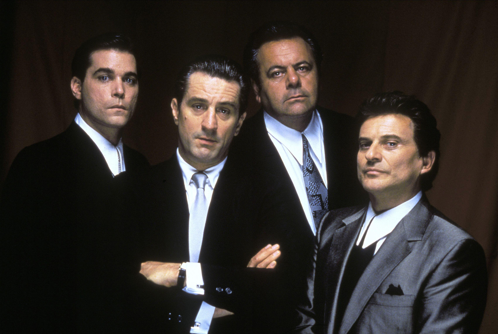
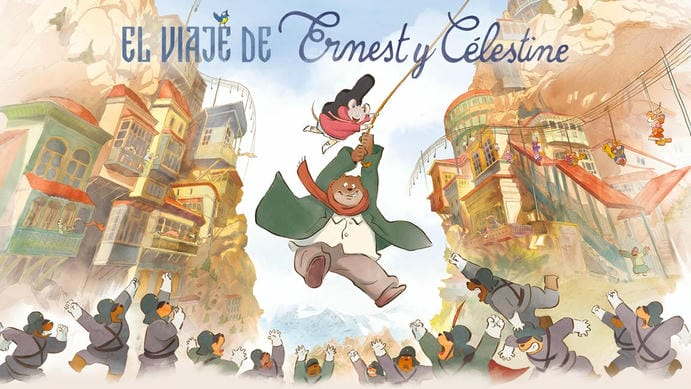
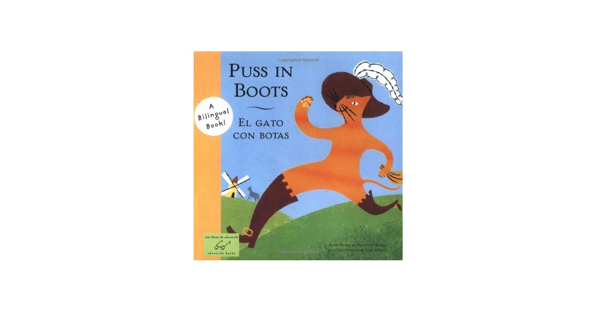
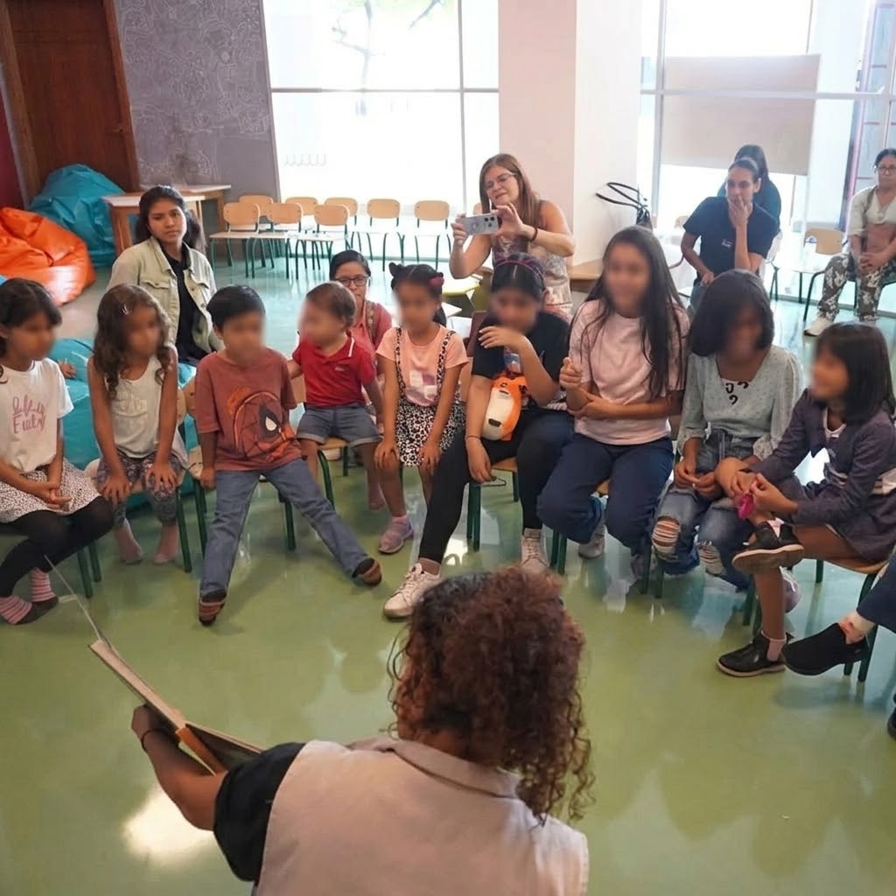
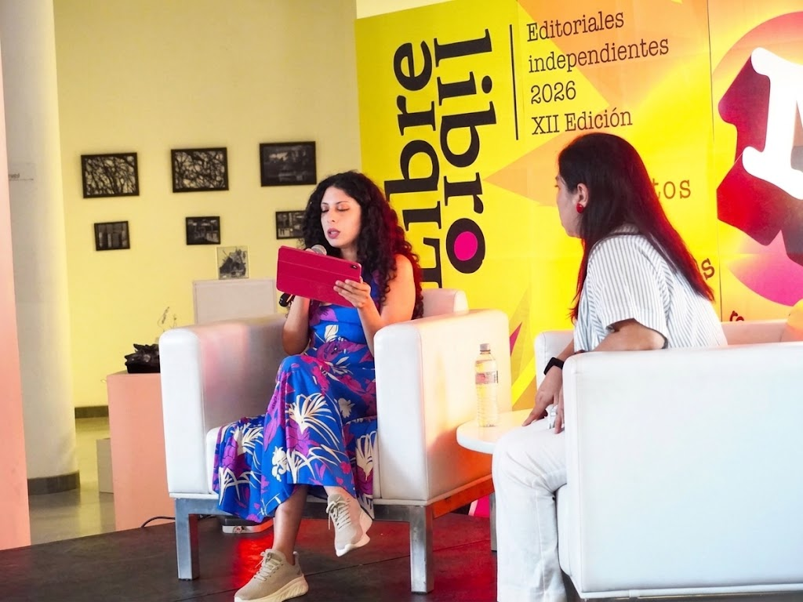

CineClub Guayacine y Cine Kids
La biblioteca usa el cine como puerta de entrada a la conversación: se proyecta una película y, después, el público comparte lo que vio, sintió y pensó.

CineClub Guayacine
¿En qué consiste? Es un espacio de cine para público joven y adulto en el que se proyectan películas representativas del cine, con atención a su valor artístico y cultural.
¿Cómo se desarrolla? Primero se proyecta la película completa. Al terminar se realiza un cineforo, es decir, una conversación abierta guiada para analizar la narrativa visual, la dirección de arte y el impacto del filme.
Una de las funciones realizadas fue Buenos Muchachos (Goodfellas), clásico del cine moderno dirigido por Martin Scorsese, seguida de su cineforo.
Lugar: Sala de Cine / Auditorio

Cine Kids
¿En qué consiste? Es cine pensado para niñas y niños, con películas animadas que permiten hablar en familia de valores como la amistad, la empatía y la tolerancia.
¿Cómo se desarrolla? Se proyecta la película en un ambiente cómodo para los más pequeños y, a partir de la historia, se invita a reflexionar en familia sobre lo que ocurre con los personajes.
Entre las películas proyectadas estuvo Ernest & Célestine, historia animada de la amistad entre un oso y una pequeña ratona.
Lugar: Sala Ría
Lectura, narración y charlas
Estas actividades acercan los libros y las ideas a niños, jóvenes y adultos mediante la narración, la lectura compartida y el diálogo.

Baúl Literario y Artístico
¿En qué consiste? Es una jornada que une literatura y arte: un cuento se cuenta en voz alta y luego se vive con las manos.
¿Cómo se desarrolla? Se realiza una narración oral escenificada del cuento elegido y, a continuación, las niñas y los niños participan en una actividad plástica interactiva inspirada en la historia.
Una de las jornadas realizadas se basó en el clásico cuento «El Gato con Botas».
Lugar: Sala Ría

Exploradores de Cuentos
¿En qué consiste? Es un club de lectura para lectores infantiles, centrado en libros álbum, donde leer es una experiencia compartida.
¿Cómo se desarrolla? Se lee el libro en grupo y después se conversa sobre la historia, los personajes y los temas que plantea, como la amistad, la ayuda mutua y la creatividad.
Entre las lecturas del club estuvo De vuelta a casa, de Oliver Jeffers, sobre la aventura espacial de un niño y un marciano.
Público: Lectores infantiles

Charlas magistrales
¿En qué consiste? Son encuentros con especialistas que dialogan sobre temas de cultura, lectura y gestión de bibliotecas, dirigidos a estudiantes, educadores y gestores culturales.
¿Cómo se desarrolla? La persona ponente presenta su tema y luego se abre el diálogo con los asistentes para compartir preguntas y experiencias.
Una de las charlas realizadas fue Bibliotecas que construyen puentes y comunidad, de Liset Lantigua, sobre el rol transformador de las bibliotecas en el tejido social, la mediación lectora y el desarrollo cultural de la comunidad.
Público: Estudiantes, educadores y gestores culturales